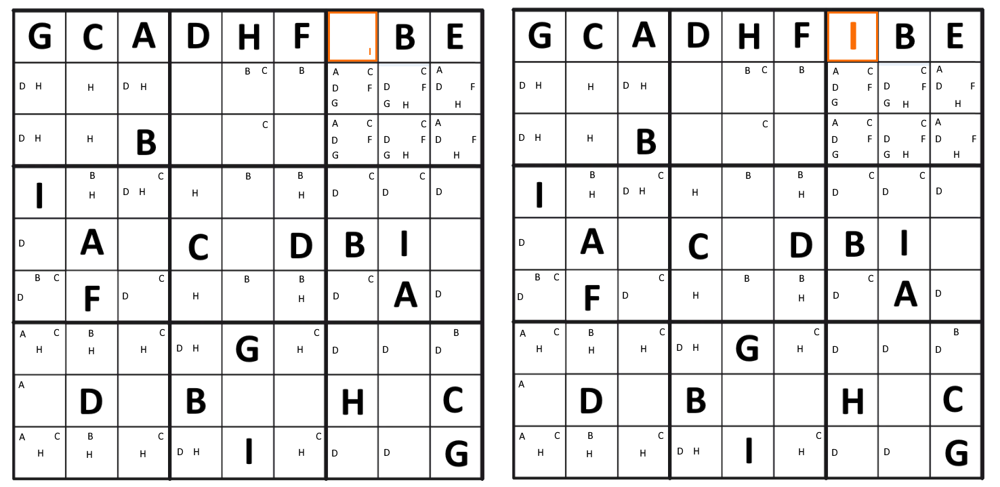
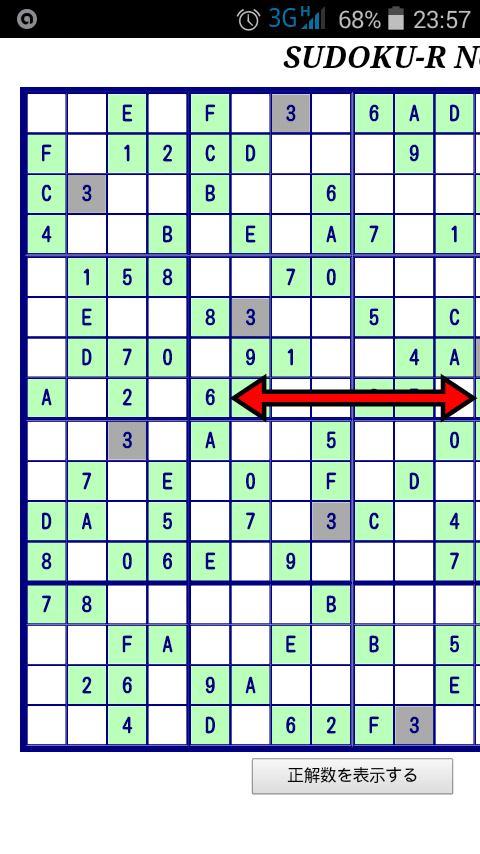
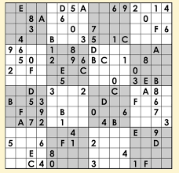
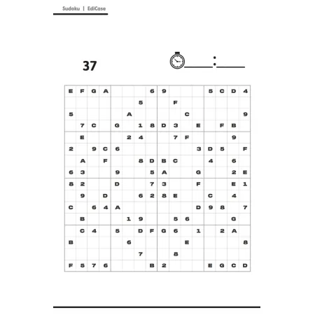

Com letras:
Criar pontos referência, ou seja, menos campos preenchidos, porém é importante criar mesmo que já tenha.
Croqui mapeavel.
Anotação interna e externa entre quadros como por exemplo:
| 1,3,5 |
1,4,5 |
1,5,8 |
| 2,7,8 |
2,5,8 |
3,58 |
| 1,5,9 |
2,5,8 |
3,58 |
1,2,3,5,7


Verificação de linhas, colunas, diagonais, retângulo exclusivo(são números iguais sem um grupo específico de quadrantes podendo ser de diferentes regiões), cruzamentos...
Jogada copiada, exemplo:
Para resolver Sudoku com letras, use a lógica de eliminação: procure letras óbvias, analise linhas, colunas e blocos 3x3, fazendo anotações (candidatos) nas células para as letras que ainda podem caber, usando técnicas como "Célula Única", "Candidato Único" e "Análise Cruzada", combinando esses métodos para preencher as lacunas sem adivinhar, respeitando a regra de não repetição.
Varredura (Scanning): Escolha uma letra (comece pelas que aparecem mais vezes) e analise as linhas e colunas em que ela já aparece para eliminar possibilidades em outras células, focando nos blocos 3x3.
Célula Única (Possibilidade Única): Se uma célula for a única em sua linha, coluna ou bloco 3x3 que pode receber uma letra específica (porque todas as outras opções foram eliminadas), preencha-a com essa letra.
Anotações (Candidatos): Escreva todas as letras possíveis em uma célula (numeradas de 1 a 9 ou as letras do quebra-cabeça) para ter um guia visual, apagando à medida que avança.
Candidato Único (Hidden Singles): Uma letra é um "candidato único" em um bloco 3x3 se ela só pode ser colocada em uma célula específica dentro daquele bloco, mesmo que a célula tenha outros candidatos.
Pares/Triplos Ocultos: Se duas (ou três) células em uma linha, coluna ou bloco contêm apenas os mesmos dois (ou três) candidatos, essas letras só podem estar nessas células. Você pode eliminar esses candidatos de outras células da mesma linha/coluna/bloco.
Pares/Triplos Apontadores (Pointing Pairs/Triples): Se um candidato aparece duas (ou três) vezes em um bloco e essas ocorrências estão todas na mesma linha ou coluna, você pode eliminar esse candidato de outras células dessa linha ou coluna fora do bloco.
Concentre-se nos Blocos 4x4: Não se esqueça de analisar os 16 blocos pequenos; muitas soluções se escondem ali.
Cuidado com Letras Semelhantes: Use marcações de cores ou um tipo de letra legível para diferenciar letras parecidas (C e G, I e J).
Use Lógica, Não Adivinhação: O Sudoku é um jogo de lógica. Anote e avance passo a passo; adivinhar pode levar a erros difíceis de corrigir.
VÍDEOS:
VÍDEOS:
.png)
.png)

